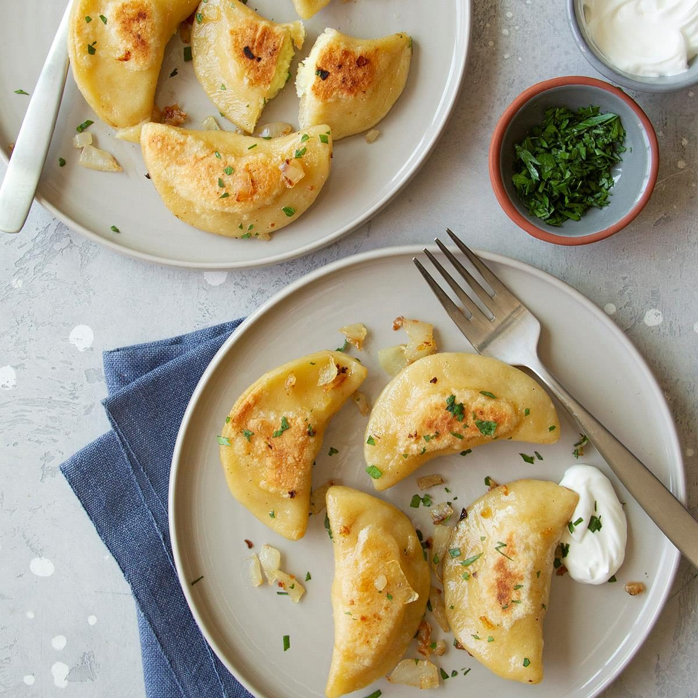

Pierogi

Description
Pierogi are one of the most recognizable Polish foods. Pierogi is actually the plural form of the word pieróg, a generic term for filled dumplings. These half circular dumplings are made from unleavened dough and are stuffed with fillings.
Ingredients
- 5 cups all-purpose flour
- 1 cup water
- 1 teaspoon salt
- 3 large eggs
- 1/2 cup butter, softened
Filling:
- 4 medium potatoes, peeled and cubed
- 2 medium onions, chopped
- 2 tablespoons butter
- 5 ounces cream cheese, softened
- 1/2 teaspoon salt
- 1/2 teaspoon pepper
For Each Serving:
- 1/4 cup chopped onion
- 1 tablespoon butter
- Minced fresh parsley
Preparation
- In a food processor, combine flour and salt; cover and pulse to blend. Add water, eggs and butter; cover and pulse until dough forms a ball, adding an additional 1 to 2 tablespoons of water or flour if needed. Let rest, covered, 15 to 30 minutes.
- Place potatoes in a large saucepan and cover with water. Bring to a boil over high heat. Reduce heat; cover and simmer until tender, 10-15 minutes. Meanwhile, in a large skillet over medium-high heat, saute onions in butter until tender.
- Drain potatoes. Over very low heat, stir potatoes until steam has evaporated, 1-2 minutes. Press through a potato ricer or strainer into a large bowl. Stir in cream cheese, salt, pepper and onion mixture.
- Divide dough into 4 parts. On a lightly floured surface, roll 1 portion of dough to 1/8-in. thickness; cut with a floured 3-in. biscuit cutter. Place 2 teaspoons of filling in center of each circle. Moisten edges with water; fold in half and press edges to seal. Repeat with remaining dough and filling.
- Bring a Dutch oven of water to a boil over high heat; add pierogi in batches. Reduce heat to a gentle simmer; cook until pierogi float to the top and are tender, 1-2 minutes. Remove with a slotted spoon. In a large skillet, saute 4 pierogi and onion in butter until pierogi are lightly browned and heated through; sprinkle with parsley. Repeat with remaining pierogi.
Return to top